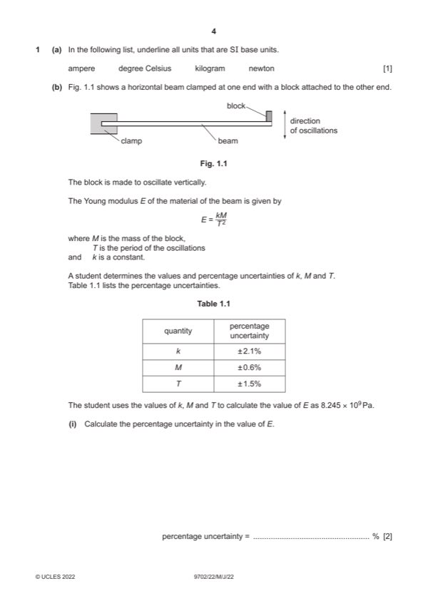

Question 1

Original paper page 4
Part 1(a) — solution
- [B1] Obtain/use: only ampere and kilogram underlined
Mark points
- [B1] Obtain/use: only ampere and kilogram underlined
Part 1(b)(i) — solution
- [A1] Obtain/use: = 5.7%
Mark points
- [A1] Obtain/use: = 5.7%
Part 1(b)(ii) — solution
- [A1] Obtain/use: E = (8.2 ± 0.5) 109 Pa
Mark points
- [A1] Obtain/use: E = (8.2 ± 0.5) 109 Pa
Part 1 — solution
Answer: 2
2
270 2 4.8 10 3 2
or
Mark points
- Correct result: 2
Part 1 — solution
- (final EK = 5.5 3.72 =) 38 (J)
Mark points
- (final EK = 5.5 3.72 =) 38 (J)
Part 1 — solution
- [B1] Obtain/use: 2
Mark points
- [B1] Obtain/use: 2